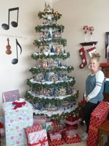

Thursday, December 1, 2016
I worked up to David’s today, getting home before 2PM. Mae went with me for my appointment with Jennie’s. We stopped at Maddock’s and bought chicken and French fries for dinner. Mae attended choir practice this evening. I watched two shows on TV while she was gone. I then spent about two hours working on an invoice for David. I then caught my journal up to date. It seems to be easy to miss a day or two and then I have trouble remembering what I did and when. It’s now bed time so good night.
Friday, December 2, 2016
I got up early as I volunteered to go to the Catholic Food Bank and help distribute food to the needy. Mae of course got up and got my breakfast ready for me. She was going to also go over there but I told her No! Standing on those hard floors would be too hard on her. She also had too much to do here at home in preparing for our Grand-Children’s Christmas party. I road over with Brother Max Fife who also volunteered to help. That way it left the car for Mae’s needs. Mae was gone to the stores when I returned home. I got some lunch and then took a short nap. This afternoon and evening I spent decorating our Christmas tree. Mae worked all day on the party plans. This evening I watched a TV show that was good on the TCM channel. It was after 10PM when we got to bed.
Saturday, December 3, 2016
We got up early and helped with the cleaning of our Church house. Shortly after returning home Sister Blanch Ervin called and asked if she could bring her outside timers over and have me show her how to set them. I went over there as next on my list was to go to Sister Leah Neilson’s to install a porch light. It only took me a few minutes to set them for her. At looking at Leah’s job I realized that I needed some more parts. I went home and ate lunch and then to get the parts. When I left David’s place yesterday, I had got what tools and supplies I thought I would need to install the light but I guess I didn’t get all of them to my truck. Without those tools it really made the job much harder and I finally had to back to Home Depot to buy some tools in order to complete the job. It took me much longer than I had expected. Mae has been busy all day getting ready and having her Grandma’s Christmas Party for the older Grand-children. She sure goes all out to make it memorable for the children. I am sorry that I didn’t help her more and when I did get home, I was so tired that I didn’t help much, in fact I set down in the chair in our bedroom and fell asleep. Mae woke me when David, Shauna, Mike and Becky came to get their children. Emily and Tyler left early to go to work and Kylan drove he and Ashley home. I help Mae clean up, and rearrange the furniture after they all left. Even though we were tired Mae cut my hair and we took showers before going to bed.
Sunday, December 4, 2016
I filled in yesterday’s journal and we watched the Tabernacle broadcast. I told Mae that I had better get ready to go as Brother Lane Johnson was coming in less than an hour to get me. I had volunteered to help with the assignment our Ward has given to help with the Sacrament meeting at the Heritage Nursing Home. Just then Lane knocked at our door. I was an hour late with my calendar. I invited Lane in while I hurried and got ready. I am so glad that I helped as it was such a special experience. By the time we got home it was almost time for us to leave for our Wards meetings. Fast and Testimony meeting was very Spiritual without any lull between testimonies. Mae and I attended Tithing Settlement this evening and then when we got home we watched the 1st Presidency Christmas message. Following that we watched a beautiful Christmas show on BYU, followed by the Vocal Point. It has been a beautiful Sabbath Day!
Monday, December 5, 2016
We got up early as I have an appointment at the V.A. Sleep Center in Salt Lake at 9:30am. Mae also has a funeral to help with followed by a “Daughters of The Utah Pioneers Christmas lunching” that she attended. When I got home I had some lunch, took a nap and went up to David’s and worked 4 ½ hours. After getting home we had dinner and then went over to visit Georgia and Rick. We enjoyed visiting with them. Rick is doing quite well with the new hip replacement. On the way home I realized that we were getting low on fuel so I stopped and filled the gas tank up for Mae. It is getting late and I want to go back up to David and Shauna’s in the morning, so we had better get to bed.
Tuesday, December 6, 2016
I returned the Hammer drill that I rented yesterday. I had to return home as I had forgotten my driver’s license. I stopped at Home Depot where I added David to my account so he can make payments directly my account. It was almost noon when I got to David’s so I ate my lunch and went to work. It took me some time to get the beam post’s ready to set the beam on them. I also framed the closet where we will install the washer and dryer. I didn’t feel tired when I left for home but when I got home I just lost all energy. We watched a great Christmas production that was held at the Conference Center. It was really a fantastic production. Next we watched a nature show before going to bed.
Wednesday, December 7, 2016
I woke at 3am and as usual while I am in the bathroom I read more in the book, The Infant Atonement. What a marvelous book that is and it bring such insight of what the Atonement has done for each of us. It also brings to sight the great love Jesus has for all of us and especially the Love our Heavenly Father has for each of us and especially the love he had for us in order to allow His First born Son to fulfill the Eternal Laws that we his children to be able to have our sins forgiven if we will also follow the Eternal Laws.
Lane Johnson called me last night asking if I could help a widow that is moving in to trailer space 290, unload furniture from her moving trucks into the house. I went down at 9am and with the help of several brothers we got the two trucks unloaded. Mae also came down and helped for a while. I came home and had lunch and then went up to David and worked until after 5pm. I am sure tired this evening and feel like I am getting a head cold.
Thursday, December 8, 2016
I got up early and left for David’s shortly after 7am as the I-beam should be delivered. I have been concerned with the weather but it didn’t snow until after the beam was delivered and they were able to deliver it to the top of the driveway. I work until 2pm before going home. My head cold is getting worse this evening. I watched a couple of shows on TV but there really wasn’t much on tonight so worked on my journal before going to bed. Mae had Choir practice this evening. She sure keeps going all the time. She is also spending a lot of time working on getting some of our old home movies ready to give a copy to each of the children as a Christmas gift. It is now 8:30pm but I think I am going to bed.
Friday, December 9, 2016
I woke at 3am and slept of and on all day. I have watch TV shows in between. I have done a little reading and have help Mae a little. Mae is sure a great wife and tries to comfort and care for me all she can.
Saturday, December 10, 2016
I did wake at 6am and enjoyed reading for ½ hr from the book “The Infinite Atonement” by Tad R. Callister. With the exception of the Scriptures, I believe this is the greatest book I have read. David’s family gave us that book for Christmas 2006. Mae and I have read it twice and now I am enjoying rereading it the third time. It puts into marvels perspective the Great Atonement and Sacrifice that our Savior performed for each of us. At 7am I tried to find something on TV to watch as I didn’t want to wake Mae by going back to bed. I called David this morning and suggested that with Tyler, Scott and Kylan’s help they should just roll the beam into the house on two furniture dollies rented from Universal Rental. David later called me back and told me they had no problems getting the beam in but they were concerned that the beam night be 1/4th inch too long. I assured him that that would be no problem as I have already thought out the problem. I believe I am feeling a little better today but am not taking chances of getting worse. Mae went to Layton to pick up our vacuum and while there she visited Sister Judy Purlit who is in a Fairfield Village rehabilitation home. Sandi and Gary came about 1:15PM and brought us two wire deer’s for outside decorations. They are an early Christmas gift from Shellie and Sandy. Gary and Sandi also stayed and helped us assemble them but it was raining to hard, so we didn’t get them set outside today. I have watched TV most of the day, just wanting to get better. Tonight I watched a BYU vs Colorado basketball game which BYU won. It is now after mid-night so we will go to bed.
Sunday, December 11, 2016
I slept fairly well waking before 6am. I haven’t felt sick but just no energy. I turned on the TV to BYU and watched a LDS Sacrament meeting which I really enjoyed. We then ate breakfast while we watched the special Christmas Devotion of Christmas. This was very enjoyable and really emphasized the Spirit of Christmas as the most importance event (the Birth of Jesus Christ) that has happened, combined with the Crucifixion and Resurrection of Christ in making it possible for all life to receive resurrection from Death and Sin. I didn’t feel well enough to attend Church but went back to sleep. After getting up I enjoyed reading more from “The Infinite Atonement”. I have also enjoyed the BYU channel today. Mae attended meetings and after getting home she went to a couple of homes visiting and wishing them a Marry Christmas.
Monday, December 12, 2016
I slept well last night but still stayed home. I did get the trash out and set the two deer up in front. Mae went down to try to help the Hilton’s prepare to move into an assisted living facility. Well, Mae wasn’t down there very long as Evie didn’t feel well so she hasn’t decided where they are going to go yet. I sure don’t know how this whole thing is going to work out. Mae went over to her siblings gathering at Georgia’s. I didn’t feel that I am over this bug enough to take a chance of giving it to someone else. I stayed home and didn’t accomplish much. When Mae returned this evening we went to K Mart and Home Depot for a few items. We ate and soon went to bed.
Tuesday, December 13, 2016
We both slept well last night and planned on attending the Temple with our Ward this morning. As we set down to eat breakfast Maleah called. She had taken a friend to the Salt Lake Air Port and was on her way home. She just wanted to stop to see us. We decided that might be the most important and maybe we could attend the Temple later. We did have a good visit with Maleah and enjoyed Jabin being with her. She is so good to Jabin, in fact you would almost think he were her own child instead of a brother. After they left I felt quite weak and so laid down and slept for almost two hours. I helped Mae with some of her Christmas preparations and then this evening we went up to Morgan to support Conner in a Christmas Choir Consort. It was 9pm when we got home so we got a snack before going to bed. Mae sure keeps busy, trying to get ready for all the Christmas activities and also trying to help the Hilton’s get moved into an assistant living center.
Wednesday, December 14, 2016
I woke about 7am and was able to read more in “The Infinite Atonement” and as I read I feel very impressed that the Hilton’s and their son Michael really needs to read this book and especially chapter 19, but how to get them to do so, I don’t know. Mae and I talked about it but could not come to a conclusion as what to do for them. While Mae was preparing breakfast she was also down loading pictures from an external hard drive to DVD’s when the computer froze up. We tried resetting the computer but without success. I took the computer down to Best Buy and had the Geek squad look at it. He just pulled the battery, held the power key for a few seconds, to drain all power reserve and waited another minute before putting the battery back in place and restated the computer. It came up without any problems. There was no charge and I was on my way. From there I went to Tom Randall’s in Layton where I purchased two 5 gal cans of kerosene at a much cheaper price than I could have bought it at Home Depot. on the Way home I stopped at Winager’s in Clearfield and bought some groceries for Mae. This evening Mae and I went Home Teaching and Relief Society visiting to Sister Neilson, Sister Neilson, the Hilton’s and the Siglin’s. We also took Christmas treat to the Hunsaker’s, and Jamie, and the Terkelson’s. After returning home we finished transferring all the pictures on to DVD’s for the children’s Christmas gift. That has been a big project to have all our home movies that were on VHS reals, transferred to a Portable External hard drive and then to DVD’s. I hope that it will be worth it!
Thursday, December 16, 2016
We went up to look at the Treeo Retirement Center with the Hilton’s. It is really very nice and we hope they get the unit that we saw. I went to the VA Center in S.L. and got my hearing aids. They sure bring in the sounds but I realize that it will take a while to get use to them. Right after I arrived home from S.L. Mae went to choir practice. I watched a show on TV and then when Mae got home we watched another show “Christmas in Connecticut” that we enjoyed. We are not where the time went but it was after 11pm before we went to bed.
Friday, December 16, 2016
 When I woke at 4am Mae was in the other room sleeping. I returned to bed and slept until almost 8am. Mae hadn’t slept very much last night so I tried to let her sleep in but the phone rang before 9am and got her up. After breakfast I went over to the Ervin’s and installed Led tubs in place of their florescent fixtures. It sure changed the lighting in their kitchen. Mae has been busy all day getting ready for Christmas. She has most of the Family Christmas gifts ready that we need to take out to or family Christmas party tomorrow. She also has prepared Christmas treats to take around to some in our Ward. I wish that something could be taken out to especially the Widow and widowers. I remember in the Mound Fort Ward of the Bishopric doing that. We have had several in our Ward that has stopped by with Christmas treats for us. It is special even though many of them we can’t eat, but we appreciate the thoughts. This evening we took treat out to several. After returning we watched a cute Christmas show on Netflix. I then helped Mae wash and dry the plastic cups for tomorrow.
Saturday, December 17, 2016
We were up early so that we could be out to Tooele where Sandi is hosting our Family Christmas party. We had most of our family there except Mike’s family and Shellie’s family. We had a nice breakfast and then enjoyed playing games. Mae and I are concerned as we seem to be leaving the Spiritual meaning of Christmas out and it is just a great Family gathering. What to do???? Sandi had reserved the cultural Hall at the Stake center. There was a Baptismal also scheduled at the Stake center but it did not interfere with our activities and I hope we did not disturb there program. We were cleared out by 2:30PM just as another family was coming in to use the building. Mae and I then drove over to Sandi’s to see their decorations. This picture is the tree that I build for Sandi, with all her trimmings on. Gail also came over. I am very concerned over Ben and Matt as they would not come in to be with us. Ben has decided that he won’t ware any pants except shorts. Gail has told him that she would accept that unless the temperatures are too cold, which today is. There for Ben was going to stay in the car, which Matt decided, I guess to spit, he also stayed in the car. Again ???? I don’t know! From there Mae and I found the motel that JaNae, Brad and their children have been put in after they were evicted from a home they were renting. We had a nice visit with them, but we feel that these children are taking the blunt of their parents actions and feelings. Again ???? I don’t know! Just as we were leaving, and I had got Mae into the car and I was just getting in, Mae thought of something and jumped to run back to the apartment. I heard a crash and looked to see what it was. Mae had slipped and fell but she was up and running to the door. She gave them the Christmas Crunch we had left over. When she came back and got in the car, she said that she was ok. We drove home, getting there just before 5PM. Tim had called me earlier and said that he wasn’t feeling the best and so wouldn’t be going with us. Marry called as we were coming home and said that it was too cold so she didn’t want to go out in this weather. Mae quickly came in the house and called Jacky but she said that she wasn’t feeling up to going. Oh well! We went to the Ward Party and had an enjoyable time. After the social ended we stayed and helped with some of the clean-up. We won a DVD at the Family Christmas Party so we decided to watch it. It was kind of lame but we enjoyed the time together.
Sunday, December 18, 2016
We slept in and then enjoyed watching the Tabernacle Choir broadcast. I fixed a quick breakfast that we ate while watching the program. I caught my journal up to date. We left for our Church Block meetings a little early as Mae will be singing in the choir today. We really had a good turnout for Sacrament meeting today. A lot of friends and family came for the special Christmas program. Our choir did a very special performance with The Bells playing in two numbers and Sister Barbara Dainard’s granddaughter McKenna singing a solo and also a second number with the choir. It was a very special program. Ron and Dian Graf also came over to support Mae and be with us. After the Sacrament meeting program finished they went home to be with Family. Mae and I remained for the block, we then returned home. Mae prepared a nice dinner and then I took a nap. Brother and Sister Hunsaker came Home Teaching and Visiting Teaching at 6pm. After they finished Mae and I went over to the viewing for Sister Okey. There was a very large turnout for that viewing. From there we drove around the Roy City complex to see the Christmas Lights. They have really done a nice job with the lighting decorations. We had a light snack and I entered this entry before we went to bed.
Monday, December 19, 2016
I went up to David’s and worked. Tyler was there to help me and we got the beam already to set in place. We worked until 1pm when Tyler had to get ready to go somewhere. I went down to Durk’s and picked up the parts to install for the dryer vent. I had to purchase a 3 ½ inch saw bit, then I went to Universal Rental and rented a material lift, getting home just in time to change before the Garf’s came. We went to eat at Chuck-A-Rama’s in Bountiful. After eating we went to Temple Square. I had brought our Snowmobile clothing which we changed into so that we might keep warm. Ron had also brought hand warmers and they really helped. After enjoying Temple Square, Ron drove us around the downtown area to also enjoy those decorations. We stopped at a Gas Station where we used the restrooms and got some treats to eat. On the way home we went into Layton to the park and drove through their area that is beautifully decorated. They have made several changes from years past which made it even more enjoyable but we had to drive through three times to see it all. Ron then stopped at the Roy City Offices and we enjoyed the decorations there. At both Parks, Ron was able to tune the radio into the station in which the music was being transmitted, which made it even more enjoyable.
Tuesday, December 20, 2016
I worked up to David’s today. Tyler and I were able to install the steel-I-beam that will support the area where I removed the bearing wall. I had rented a material lift yesterday afternoon, however when we set it up today, the forks were missing. Tyler drove back down to Universal Rental and got the forks. With the lift we were able to move the beam into place and install the bearing posts. On the way home I returned the Material Lift and picked up a Concrete Saw. When I got home I was tired and so I just watched TV. Mae was busy wrapping Christmas presents and getting things ready for the “Grandma’s Christmas Party” for the younger Grandchildren tomorrow.
Wednesday, December 21, 2016
I picked up some material at Bolt & Nut before going up to David’s. when I went to pay for the parts, their computers were down and so they couldn’t take my Credit Card. All the cash I had was a $10.00 bill and so they accepted that for payment. With Tyler and Emily’s help we cut and removed some of the concert flooring to allow us to add the needed plumbing in the basement. I returned the Concrete Saw to Universal Rental and came on home. I was really tired so I took a nap before getting ready to go out to eat, at Sizzler’s, for Mae’s Birthday. Sandi, Gary, David, Shauna, Scott, Mishelle, Jeff and Gail all joined us. We had a wonderful dinner and visit with each other. When we got home I tried to find the BYU vs Wyoming Basketball game that we saw the first part of on the TV, while eating. However I could not find the channel on our TV but did find a Movie channel and watched the show “The Halls of St. Mary” and so watched it until we went to bed. I was very tired and hurt in my lower back, knees, ankles and wrists, and so rubbed Thera-gesic on those areas before going to bed.
Thursday, December 22, 2016
Mae had got up earlier but she woke me about 9am. After breakfast I helped Mae for a little while and then went to Little Caesars’ and picked up Pizza’s for the party. The children were here when I got back. I was tired and the noise of the children was bothering me so I went in the bed room and laid down and soon went to sleep. I slept for over an hour before the phone woke me. The children really enjoyed the party and Mae enjoys making them happy. Mae got the idea for having these Christmas parties from Sister Hinckley. The retirement center sent Mae some measurements of the unit that the Hilton’s are looking at and so we took them down to the Hilton’s but they were not at home. We took a Christmas treat to Bishop and Sister Presnell and to two Sisters in our Ward. We also stopped at Marianne’s and picked up the check form the electric co. for the reimbursement of the cooler that I installed for Marianne last June. I didn’t think we would ever see that money again. Marianne needed someone to pick up a prescription slip from Utah Pain and Rehab in on 12 and Wall so we went in and got that for her. She also told Mae that she was out of dog food so Mae called her to find out the brand of dog food and said that we could stop and get that for her. She then asked us to get some cat food, some yogurt and milk for her. We are not sure whether we are helping some people or just being used? When we took the food to her she gave s a check. The last check we took for her didn’t clear and we ended up throwing it in the trash?? After getting home Mae prepared some dinner while I caught my journal up to date. We then went into the living room and watched a show on TV before going to bed.
Friday, December 23, 2016
I woke at 6:30am and not wanting to wake Mae I went into the front room and read from “The Infinite Atonement”. Oh! How I wish that I had learned to read, the enjoyment of reading and the need for reading so much earlier in life. I heard my Father say, “I only graduated from the 4th grade and I made out ok.” My mother quite school as she started the 11th because of a teacher, finances and to get married. I still remember of coming home from school and asking why I had to go to school and the answer I got was “the law says you have to go to school until you are over 16 years old”. I am not trying to criticize or put the blame on my parents but I often remember the lines of the poet “The sadist words of speech or pen are, it might have been”. Mae slept until 8am before waking up. I was preparing an omelet for breakfast when Jeff brought the children over. He only stayed for a few minutes. The children had eaten and so were not hungry. After breakfast Mae spent time with the children playing games and they started putting the puzzle together that Sandi had given Mae as a birthday present. I spent quite a while drawing the bathroom plans for David and Shauna’s bathroom downstairs. After lunch I joined Mae and the children in building graham cracker houses. I cut out cardboard squares and covered them with tinfoil, for them to build on. Rachel wanted to build a bell tower so I helped her with that. This evening we let the children pick a movie on Netflix and we all watched that together. Mae cooked fried chicken for dinner and they all ate fairly well. There was some problem when it came time for bed but Mae worked that out with them fairly well. I wasn’t as patient and so I went into our bedroom and read from my book. Mae and I played a game of Rummikub and Mae won by 94 points. We then went to bed.
Saturday, December 24, 2016 Twas the day before Christmas!
Mae didn’t sleep well so I let her sleep a little longer. I heard the children up, so I got up shortly after 7am. Mae had set the dishes out for breakfast, also the muffin pan was filled with the paper cups and a muffin mix was to the side of it. Mae had also set the large package of bacon out to thaw, so I broke it down into smaller packages and put it back in the freezer. I mixed and baked the muffins and cooked scrambled eggs for breakfast. The children were eating when Mae came out. After breakfast I helped clean up the kitchen and get the dishes washing in the dish washer. I started this journal entry and then played two games of Hearts on the computer. I won both games by shooting the moon in each game. Mae and I played a game of Old Pig with the children. As we started the game I told Mae and the children that this morning was my lucky day, so watch out. I ended winning the game at the end by being able to take all the cards. Jeff came about the time that we finished the game. After they left we took showers, packed the car with our Christmas gifts for or family. We took some information to the Hilton’s concerning the rental of a U-haul trailer, and some Christmas treats to three families. We then drove up to David and Shauna’s where we spent the night. Shauna had bade a very nice Christmas Eve dinner that we all enjoyed. David asked us to tell some of our experiences that we remembered about Christmas when we were children. It was 10:30 or later that we got to bed. It was just lightly snowing when we turned off the lights and went to bed.
Sunday, December 25, 2016 Christmas Day!
I woke at 3:30am as did Mae but Mae soon went back to sleep while I read for a ½ hour before going back to sleep. We got up at 5:30am to open Christmas gifts. It was a very enjoyable time of sharing love expressions as we exchanged gifts. It was certainly a bountiful Christmas. Shauna and David prepared a wonderful breakfast. After breakfast Mae cuddled up in a soft blanket that we received for Christmas, on the recliner and took a nap. I went up stairs and cuddled up on the bed and went to sleep. We woke in time to attend Church services at David and Shauna’s Ward. It had snowed during the night and snow was still falling this morning. I called Sandi and she said that they had a lot of snow out their way. We had hoped to attend Church at Chelci and Steve’s Ward as Chelci will be singing and Sandi is going to accompany her. With the snow we decided not to go out. David tried to clear a path down from their house to the road. I slipped part way down but we ok. Then just before reaching the truck I again slipped but this time I fell backwards and hit pretty hard. We attended meeting and really enjoyed partaking the Lords Super as well as enjoyed the program that was put on by the Ward Choir. We came home from meeting and packed our belongings. We came home and left some of items there and went over to Gail’s Mothers home. Jeff and Gail and their family are staying there. Jeff has to go home tomorrow as it is Year End Closing at the plant. Gail and the children will be staying for a few more days. Gail, Jeff, Mae and I played a game of Hearts in which I won. We left there shortly after 5pm and went to Scott and Mishelle’s. Mishelle had dinner just about ready, then after dinner we gave them our gifts to them. We got back home about 8:30PM and though we were tired it still too us a while to get to bed.
Monday, December 26, 2016
We had a hard time getting up this morning. I did get some reading in before getting ready for the day. We still had things to put away, plus I needed to clear snow from the driveways and sidewalk. It was 10AM before I left for David’s. I did get a 30 amp breaker installed to a four way outlet box. This way I will have power downstairs to work with. I then installed 9 inch lag bolts into the bearing post so it added security and strength the post. David, Shauna and I worked more on the plans, making some changes to them. It was there about 5 hours today. After getting home I showered and then took a nap. I slept for over 40 minutes. Mae has been busy with house work and then she went to the Hilton’s to try to help them. Evelyn wasn’t feeling well so there wasn’t much she could do for them. This is really making it hard trying to know what we can do to help them. I finally called Brother Hess and visited with him about our concerns. He will meet with Bishop Presnell in the morning and get back with us with some advice. We watched a show on Netflix while we ate our dinner. It is now after 10PM so we will soon go to bed.
Tuesday, December 27, 2016
We got up and spent most of the mornings trying to help the Hilton’s prepare to move. This afternoon we went to the Temple. Bishop Presnell is the only other person from our Ward that attended. Following the session the three of us went to the cafeteria for lunch. It gave us a chance to visit with Bishop about the moving of the Hilton’s. He also told us that Brother Gene Barfuss died this morning after several days in the hospital. The funeral will be next Monday morning. That may cause us some problems with the Hilton’s moving plans. After leaving the Temple, Mae and I went to Walmart and bought some packing tape and bubble wrap for the Hilton’s. We spent the rest of the evening discussing the move with Bishop Presnell or the Hilton’s. Mae called Mike to see if we were still on to go with them tomorrow, for Mae’s birthday, to the Provo Temple and then out to eat, along with staying at their place tomorrow evening and playing games. Mike and David had gone to Los Vegas but came home sick with the flu. That shot those plans down.
Wednesday, December 28, 2016
I didn’t sleep very well last night and what sleep I got was in the front room in the recliner. When we got up I took Mae out to eat breakfast at the Bee’s café. It was very good and we enjoyed it. My left hearing aid has quit working, actually it quit during the Temple Session yesterday. I took my mail gun over to Arrow Fasteners to get it repaired. As I was getting on the freeway to come home a police officer pulled me over. The registration on the car has expired. He just gave me a notice to get it registered soon. Somehow we had missed that notice but after getting home we sent in the forms to get is registered. We took pictures of the pickup for the Hilton’s and got it advertised on KSL.COM. I hope it will sell quickly as they sure need the money. I made an appointment for a salesman from Hearth Home to come up to David’s Friday at 9AM to give me some detail on the installation price of a fireplace. I later checked with Mountain Air about putting heat in the basement of David’s home and while there I noticed that they also sell and install fireplaces, so I asked them to send someone up on Friday after 10:30AM. This way we will get a couple of prices and opinions. Mae has received many, at least 50, face book Birthday messages plus several phone calls. She is a pretty perfect gal and I am sure glad she is mine. This evening we went out to eat at Chuck-A-Rama and sure enjoyed that meal. I then took her to see the Christmas lights of Down Town Ogden. We parked the car and got out and walked around for a few minutes but it was cold so we didn’t walk far. We stopped at Costco for a few items and to get gas in the car. It is now after 9PM and we are both tired so will soon get to bed. All of our children have called or texted Mae to express their love and best wishes on her Birthday.
Thursday, December 29, 2016
We got up and I got ready to go to S.L. V.A. to have my hearing aids checked out. I picked up Ron Graf on the way. It went well at the V.A. and they found that I had some bad batteries. She also adjusted the fit on my right ear which really feels much better. She also told me how to install the ear piece so that I don’t damage the wire. She gave me a neck strap so I can wear the remote control around my neck but she also told me that I can just turn the remote off unless I use it to adjust the volume. Over all it was a good trip to Salt Lake. Ron and I went to Golden Corral for lunch being that our wife’s we out to eat with some other women for Mae’s Birthday. When I got home I took a nap. After Mae and Dian finished their dinner they went to the Base Commissary grocery shopping. After eating dinner Mae and I were going to watch a Christmas show on DVD but our TV is not working. We called Comcast but the technetium could not find the problem so they are going to send out a technetium to the house tomorrow. Being that we can’t get the TV to work we played Rummikub in which Mae won two out of three games. I called Roy to see how he is doing and visited for a few minutes. He said it is quite cold down there. Probably the coldest he has experienced since he move to California. It is going on to 10PM so we had better get to bed.
Friday, December 30, 2016
I got up at 5am but had slept well. I read for over ½ hr and then had to hurry to leave before 8am. I went over to Graf’s and borrowed Ron’s framing nail gun as mine is still in being repaired. I had two sales representatives meet me there and we discussed installing the fireplace for David and Shauna. The second one was from Mountain Air and I hope they are the one that David picks as we will have them run the heat vents also. He gave me some good tips on installing base board heaters in the bedroom and kitchen. I spent most of the day planning the best way to do the plumbing, framing, water lines, heating and ceiling fur downs. Mae had spent most of the morning and early afternoon at the Hilton’s but came home to be here when Comcast came to repair our TV reception. It was their box that had gone bad o it didn’t cost us anything. I got home just as they we finishing. We watched a western show and a movie on TV. I then brought in water from our distiller and took 2 gallons of water over to Jackie. Of course I had to visit for a while with her. I am tired and we have to go to the church in the morning to do the weekly cleaning, so we had better go to bed before long. Mae was reading so I played a game of Harts and won the game. I finished my journal entry and got ready for bed.
Saturday, December 31, 2016
I woke early this morning and during that time I continued my reading of “The Infinite Atonement” by Tad R. Callister. When Mae got up she prepared us a wonderful breakfast of fried fish and eggs. I helped her a little. We went to the chapel to join with other from our Ward to do the weekly cleaning. We had lots of help and was finished by 9AM. After returning home I showered and shaved. Mae went down to Hilton’s to see what she can do to have them ready to move Monday morning. I finished reading “The Infinite Atonement”, which was one of my goals for this year. This year I have reread the “Book of Mormon”, read most of the Priesthood lessons and read “The Infinite Atonement”. As I am getting older, I am gaining an appreciation for reading that I only wish that I had gained many, many years ago. We are going to go up to Irven and Sandy’s to spend the afternoon and evening with them and Bryce and Deanna. We plan on leaving Irven and Sandy’s about 9PM to come home. We want to be home so we can get rest before going up to Morgan to attend Sacrament meeting with Kin and Jeanenne’s as they will be speaking prior to their departure to serve a 24 month mission call in South Africa, Johannes Burg.